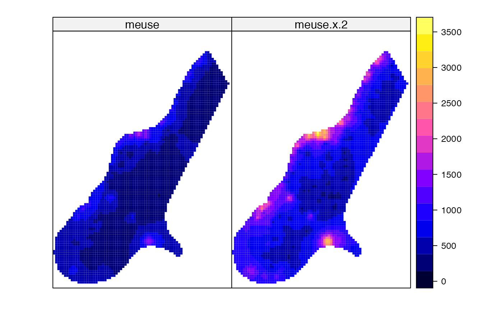
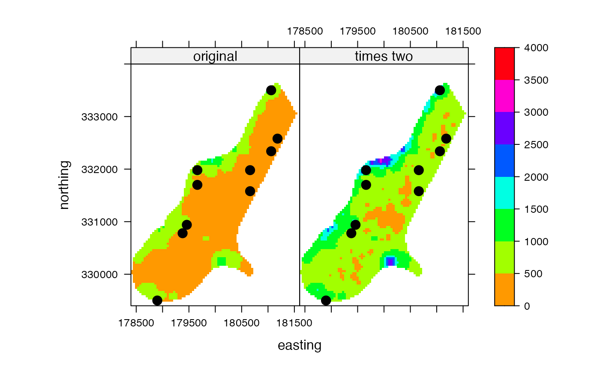

spplot.RdA wrapper function around spplot (sp package). With spplot it is easy to map several layers with a single legend for all maps. ssplot is itself a wrapper around the levelplot function in the lattice package, and see the help for these functions for additional options.
One of the advantages of the wrapper function for Raster* objects is the additional maxpixels argument to sample large objects for faster drawing.
There are also added spplot methods for Spatial objects that have no data.frame and for SpatVector (terra package)
# S4 method for Raster
spplot(obj, ..., maxpixels=50000, as.table=TRUE, zlim)Raster* object
integer. Number of pixels to sample from each layer of large Raster objects
If TRUE, the plots are ordered from top to bottom
Vector of two elements indicating the minimum and maximum values to be mapped (values outside that ranage are set to these limits)
r <- raster(system.file("external/test.grd", package="raster"))
s <- stack(r, r*2)
names(s) <- c('meuse', 'meuse x 2')
spplot(s)

pts <- data.frame(sampleRandom(r, 10, xy=TRUE))
coordinates(pts) <- ~ x + y
spplot(s, scales = list(draw = TRUE),
xlab = "easting", ylab = "northing",
col.regions = rainbow(99, start=.1),
names.attr=c('original', 'times two'),
sp.layout = list("sp.points", pts, pch=20, cex=2, col='black'),
par.settings = list(fontsize = list(text = 12)), at = seq(0, 4000, 500))
